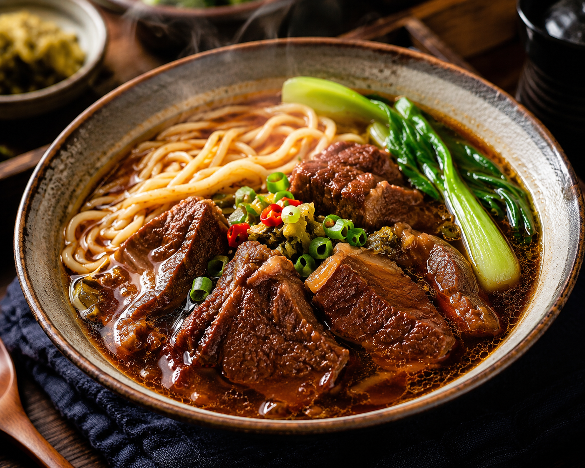

【正餐推薦】招牌紅燒牛肉麵  店家名稱： 老街坊原汁牛肉麵 價位區間： 150 - 220 元 / 心得：4.8顆星 營業時間： 11:35 - 20:30 店家地址： 台中市西屯區xxx路xx號 美味心得 這家店的牛肉麵湯頭是用牛骨慢火熬煮而成，喝起來非常甘甜濃郁且不油膩。牛肉塊切得很大厚實，滷得十分入味，咬下去軟嫩帶點微 Q 的筋。麵條部分推薦選擇手工寬麵，吸附湯汁的能力極佳，吃完非常有飽足感！ 返回美食主頁